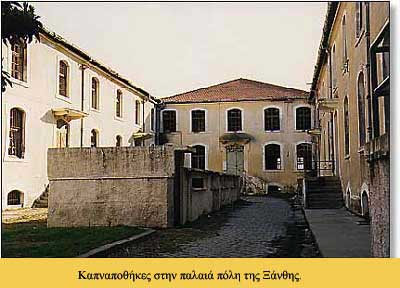

|

Λίγο μετά από τα μέσα του 19ου αι., το κύριο προϊόν της Ξάνθης, ο καπνός, στηρίζει την οικονομική, εκπαιδευτική και πολιτιστική ακμή της πόλης. Μερικές δεκάδες Ξανθιώτες καπνέμποροι επιδόθηκαν και διέπρεψαν στο εμπόριο του καπνού και στη σιγαρετοβιομηχανία και έκαναν γνωστά στα πέρατα του κόσμου τα πρώτης ποιότητας ανατολικού τύπου καπνά της Ξάνθης. Δημιουργείται έτσι μια οικονομικά ανθηρή τάξη καπνεμπόρων, που είχαν την ευκαιρία να ταξιδεύουν σε χώρες του εξωτερικού, να διατηρούν δικά τους σπίτια σε μεγάλα αστικά κέντρα της Ευρώπης, αλλά και να κτίζουν μεγαλοπρεπή σπίτια στην Ξάνθη, να επιδίδονται σε πολυδάπανες ψυχαγωγίες, καλώντας συχνά ξακουστούς καλλιτέχνες από το εξωτερικό. Δίπλα σ’ αυτούς, πέντε ως έξι χιλιάδες Ξανθιώτες καπνεργάτες –σε σύνολο πληθυσμού μέχρι το 1912, δέκα έως δώδεκα χιλιάδες– οι οποίοι εργάζονταν πάνω από 12 ώρες την ημέρα, από παιδιά της προεφηβικής ηλικίας μέχρι τα βαθιά γεράματα και κάτω από πανάθλιες συνθήκες. Μικρή μόνο βελτίωση των συνθηκών αυτών σημειώθηκε κατά την περίοδο του Μεσοπολέμου. Οι συνθήκες αυτές υπήρξαν αφορμή και ο λόγος, για τον οποίο αναπτύχθηκε στην Ξάνθη το αριστερό κίνημα και εκδηλώθηκαν απεργιακές κινητοποιήσεις μεγάλες, κατά καιρούς, με ανθρώπινα κάποτε θύματα.
Κατά τα τελευταία χρόνια της οθωμανικής κυριαρχίας, είχε αρχίσει να εισδύει στο καπνεμπόριο της Ξάνθης το ξένο κεφάλαιο. Μεγάλες πολυεθνικές εταιρείες υπόσκαπταν τα θεμέλια του ντόπιου καπνεμπορικού κεφαλαίου. Γι’ αυτό μετά την, κατά το 1920, απελευθέρωση της Ξάνθης, έπαψε και η μεγάλη αίγλη των γηγενών καπνεμπόρων. Μερικοί από τους πρωτοπόρους καπνεμπόρους της χρυσής εποχής ή νεότερα μέλη των οικογενειών τους μετατράπηκαν σε αντιπροσώπους ξένων καπνεμπορικών οίκων.
Ξάνθη: η φημισμένη καπνούπολη
Η παλιά πόλη
|
|